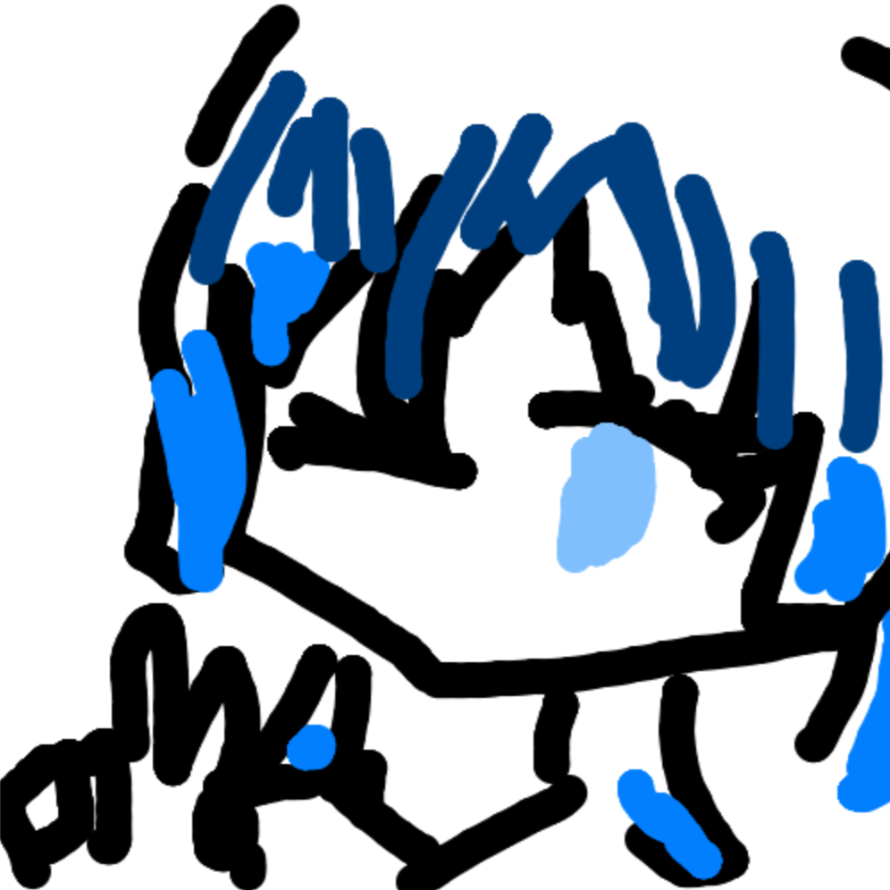

大臣紹介
内閣総理大臣

ゆゆと
防衛大臣
紅蓮ノヴァ
ガンバルガンバくん！
国土交通省

KJ_87
鉄道庁
フィンネッコ
スポーツ庁

かずもに
サイバー庁

marisa
宮内省

葵

ky0m
経済産業省

nekoLnuβ

ライム
zainin
財務省

常磐 優希「ウニ」

くれは
文部科学省

トト

ルヴァ@おまねこ推し
爆破部隊元帥

月（ルナ）（ネコ）
軍事参謀大臣
shun_game11
政治局委員会

ちゃちゃ丸さん

れじすん